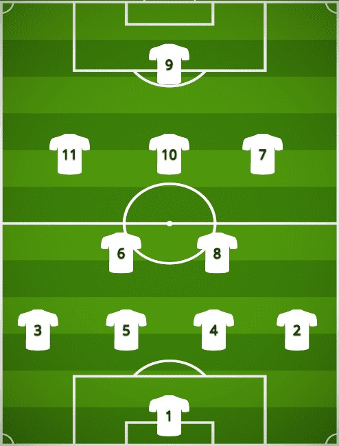

Formace
4-2-3-1 je taktický systém ve fotbale, který se často používá k rozestavení hráčů na hřišti. Zde je základní popis formace 4-2-3-1:
Tato formace se snaží kombinovat defenzivní a útočný potenciál. Obránci mají za úkol chránit branku a zamezit soupeřům vstřelení gólu. Defenzivní záložníci podporují obranu, pomáhají v rozehrávce a přerušují protiútoky soupeře. Útoční záložníci jsou odpovědní za tvorbu útoků a poskytují přihrávky útočníkovi. Útočník je hlavním cílem zakončení a snaží se vstřelit góly.
Každý tým může upravit formaci 4-2-3-1 podle svých potřeb a preferencí. Někteří hráči mohou mít flexibilitu v pohybu a přechodu mezi různými pozicemi během hry. Taktické formace jsou však dynamické a hráči se často přizpůsobují situacím na hřišti.
4-2-3-1
Mike Maignan

Brankář
Mike Maignan je francouzský fotbalový brankář, který se narodil 3.července 1995 v městě Cayenne ve Francouzské Guyaně. Od roku 2021 působí v italském klubu AC Milan.
Maignan začal svou profesionální kariéru ve francouzském klubu Paris Saint-Germain, kde strávil mládežnické roky. V roce 2015 se propracoval do A-týmu, ale příliš příležitostí mezi tyčemi nedostal. Proto se rozhodl přestoupit do Lille OSC v roce 2015.
V létě roku 2021 přestoupil Maignan do AC Milan. Příchod Maignana do klubu posílil brankářskou pozici a přinesl další kvalitu do týmu. Svými reflexy, schopností čtení hry a klidem ve vypjatých situacích se stal důležitým článkem Milanovy obrany.
Obránce
Theo Hernández je francouzský fotbalový obránce, který se narodil 6. října 1997 v Marseille ve Francii. V současnosti hraje za italský klub AC Milan.
Theo Hernandez pochází ze slavné fotbalové rodiny, jeho starší bratr Lucas Hernandez je také profesionálním fotbalistou a reprezentuje Francii. Theo začal svoji kariéru ve mládežnických týmech klubu Atlético Madrid, kde také debutoval v profesionálním fotbale v roce 2016.
V roce 2018 přestoupil Theo Hernandez do italského AC Milanu za poplatek kolem 20 milionů eur. V Miláně se rychle stal důležitým hráčem a předvádí vynikající výkony. Je známý svou rychlostí, ofenzivními dovednostmi a schopností podílet se na útoku týmu.
Theo Hernández
Fikayo Tomori
Obránce
Fikayo Tomori je anglický fotbalový obránce, který se narodil 19. prosince 1997 v Calgary v Kanadě. V současnosti hraje za italský klub AC Milan, kam přestoupil v roce 2021.
Tomori je odchovancem anglického klubu Chelsea. V roce 2016 se připojil k akademii Chelsea a postupně si vybudoval silnou pověst jako talentovaný obránce. V roce 2019 debutoval v prvním týmu Chelsea a rychle se stal důležitým hráčem.
V lednu 2021 odešel Fikayo Tomori na hostování do italského AC Milanu. Jeho představení v Miláně bylo velmi úspěšné a v létě téhož roku přestoupil trvale do klubu. Stal se pevnou součástí obrany AC Milanu a svými výkony přispěl k úspěchu týmu.
Tomori je rychlý, silný a dobře se orientuje v hře. Má schopnost číst situace a včas zasahovat. Je také schopný přispět do útoku svými náběhy po straně. Své schopnosti prokázal i v reprezentaci, kde reprezentoval Anglii na mládežnické úrovni.
Obránce
Simon Kjær je dánský fotbalový obránce, který se narodil 26. března 1989 v městě Horsens v Dánsku. V současnosti hraje za italský klub AC Milan a je také kapitánem dánské fotbalové reprezentace.
Kjær začal svoji profesionální kariéru v dánském klubu FC Midtjylland, kde si brzy získal pozornost svými výkony. V roce 2008 přestoupil do italského Palerma, kde strávil několik sezón a prokázal své kvality jako pevný a spolehlivý obránce.
V roce 2020 se Kjær připojil k AC Milanu, kde se stal klíčovým hráčem v obranné linii. Jeho vedení a zkušenosti přispěly k posílení defenzivy týmu. Je známý svými silovými schopnostmi, dobrým postavením a dobrým rozehráváním.
Simon Kjær
Davide Calabria
Obránce
Davide Calabria je italský fotbalový obránce, který se narodil 6. prosince 1996 v městě Brescia v Itálii. V současnosti je hráčem italského klubu AC Milan.
Calabria začal svoji profesionální kariéru v AC Milan, kde prošel mládežnickými týmy a postupně se vypracoval do prvního týmu. Svůj první profesionální zápas za AC Milan odehrál v roce 2015 a od té doby se stal pevnou součástí obrany klubu.
Calabria je univerzálním obráncem, který může hrát jak na pravém, tak i na levém kraji obrany. Je známý svým rychlým tempem, schopností útočit po stranách a přesným přihrávkám. Také prokázal svou schopnost bránit se proti silným soupeřům a číst hru.
Během svého působení v AC Milanu se Calabria stal důležitým hráčem. Jeho výkony ho vynesly do povědomí fotbalových fanoušků po celém světě. Přispěl k úspěchům AC Milanu, včetně kvalifikace do Ligy mistrů UEFA.
Defenzivní záložník
Sandro Tonali je italský fotbalový záložník, který se narodil 8. května 2000 v městě Lodi v Itálii. V současnosti hraje za italský klub AC Milan.
Tonali je defenzivní záložník s vynikajícími herními schopnostmi. Je známý svou precizní přihrávkou, schopností číst hru a vynikajícími dovednostmi na míči. Má skvělou techniku, klid v rozehrávce a schopnost se účastnit útoku týmu.
Díky svému talentu a konzistentním výkonům se Tonali stal důležitým hráčem AC Milanu. Přispěl k posílení středu pole a vytvoření silného herního základu pro tým. Své schopnosti prokázal také v reprezentaci, kde reprezentuje Itálii na různých úrovních mládeže.
Sandro Tonali
Rade Krunić

Defenzivní záložník
Rade Krunić je bosenský fotbalový záložník, který se narodil 7. října 1993 ve městě Foča v Bosně a Hercegovině. V současnosti hraje za italský klub AC Milan.
bKrunić začal svou profesionální kariéru v bosenském klubu FK Borac Banja Luka. Poté přestoupil do italského klubu Empoli FC, kde prokázal své schopnosti a talent. Své výkony ho katapultovaly do povědomí větších klubů.
V roce 2019 přestoupil Rade Krunić do AC Milanu, což byl pro něj důležitý krok ve kariéře. Stal se součástí středu pole týmu a přispěl k posílení herního základu. Krunić je všestranným záložníkem, který může hrát na různých pozicích v prostřední řadě. Je známý svým bojovným stylem hry, tvrdou prací na hřišti a schopností vybojovat míč.
Útočný záložník/Útočník
Rafael Leão je portugalský fotbalový útočník, který se narodil 10. června 1999 v městě Almada v Portugalsku. V současnosti hraje za italský klub AC Milan.
Leão začal svou profesionální kariéru v portugalském klubu Sporting CP, kde prošel mládežnickými týmy a postupně se vypracoval do prvního týmu. Svými výkony a talentem si rychle získal pozornost a stal se jedním z nejnadějnějších mladých útočníků v Portugalsku.
V roce 2019 přestoupil Rafael Leão do AC Milanu, kde se stal součástí útočné sestavy týmu. Je považován za jednoho z největších talentů portugalského fotbalu. Je rychlý, obratný a schopný vytvářet a zakončovat gólové situace.
Rafael Leão
Ismaël Bennacer
Útočný záložník
Ismaël Bennacer je alžírský fotbalový záložník, který se narodil 1. prosince 1997 v městě Arles ve Francii. V současnosti hraje za italský klub AC Milan.
Bennacer začal svou profesionální kariéru ve francouzském klubu Arles-Avignon, kde se rychle prokázal svými schopnostmi a talentem. Poté přestoupil do italského klubu Empoli FC, kde se dále rozvíjel a získal si pozornost fotbalového světa.
V roce 2019 se Ismaël Bennacer připojil k AC Milanu, kde se rychle stal důležitým hráčem ve středu pole týmu. Jeho přesnost v přihrávkách, schopnost dobře bránit a tvrdá práce na hřišti přispěly k posílení herního základu AC Milanu.
Útočný záložník/Útočník
Junior Messias, plným jménem Thiago Alves Mendes Messias, je brazilský fotbalový záložník, který se narodil 8. ledna 1992 v městě São Paulo. V současnosti hraje za italský klub AC Milan.
Messias začal svoji profesionální kariéru v brazilském klubu América FC, kde se postupně vypracoval z mládežnických týmů do prvního týmu. Své výkony si všiml italský klub Crotone, který ho v roce 2019 přivedl do Evropy.
V roce 2021 se Junior Messias připojil k AC Milanu, což byl pro něj další krok ve kariéře. Stal se součástí silného týmu, který bojuje jak v italské lize, tak i v evropských soutěžích. Messias má potenciál přinést do týmu kreativitu a ofenzivní sílu.
Junior Messias
Olivier Giroud
Útočník
Olivier Giroud je francouzský fotbalový útočník, který v současnosti hraje za italský klub AC Milan. Přestoupil do Milána v červenci 2021 po svém odchodu z Chelsea FC.
Od svého přestupu do AC Milanu Giroud předvádí stabilní výkony a přispívá svými góly k úspěchům týmu. Je známý svým fyzickým projevem, dobrou hlavičkou a schopností vytvářet gólové příležitosti pro své spoluhráče.
Giroud má také bohaté zkušenosti z reprezentace Francie, kde odehrál více než 100 zápasů. Byl členem francouzského týmu, který vyhrál Mistrovství světa v roce 2018. Své kvality ukázal také na evropském šampionátu a v jiných mezinárodních soutěžích.
Olivier Giroud je uznávaným fotbalovým profesionálem, který se svou schopností vstřelit důležité góly a přínosem pro týmovou hru získal si uznání a respekt ve fotbalovém světě. Jeho přítomnost v útoku AC Milanu přináší potřebnou kvalitu a zkušenosti.